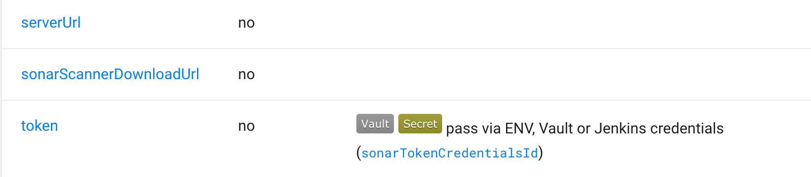
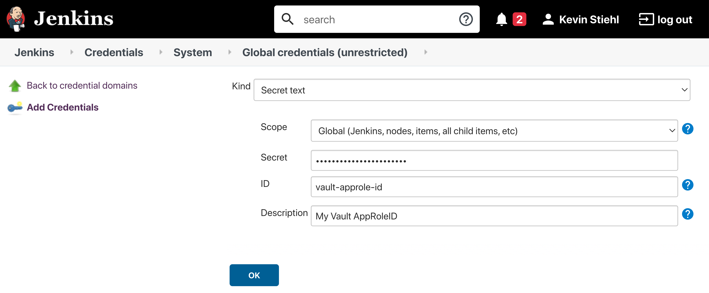
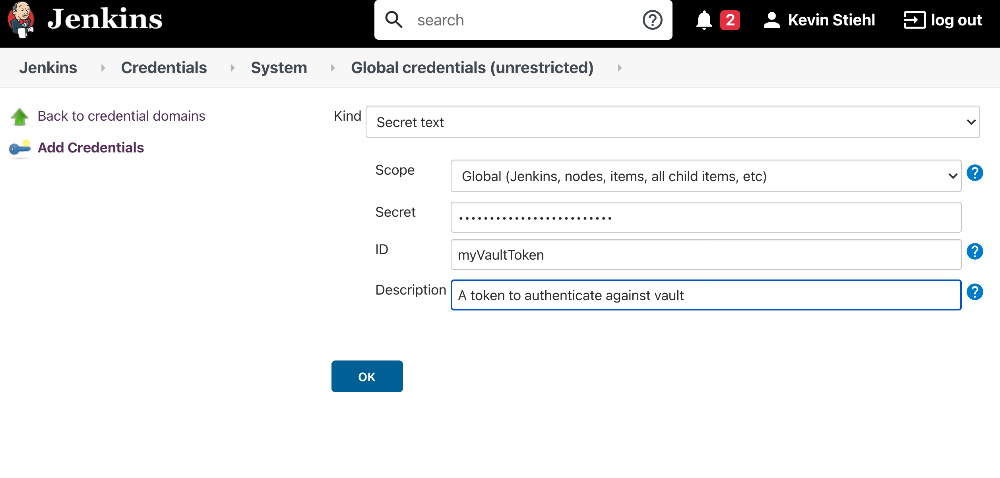
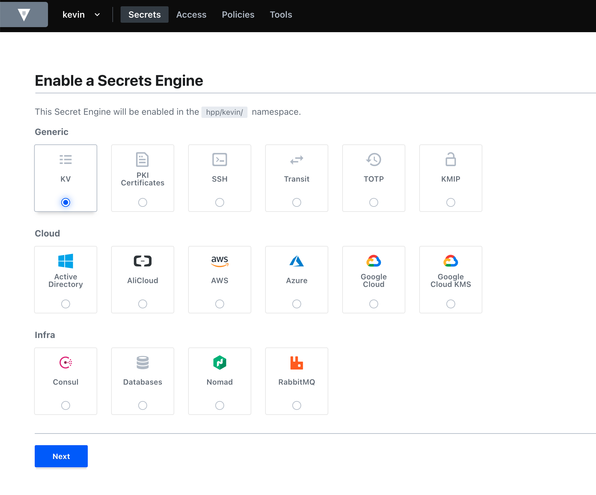

Vault for Pipeline Secrets¶
Project "Piper" supports fetching your pipeline secrets directly from Vault. Currently, Vault's key value engine is supported in version 1 and 2, although we recommend version 2 since it supports the versioning of secrets
Parameters that support being fetched from Vault are marked with the Vault Label in the Step Documentation.

Authenticating Piper to Vault¶
Piper currently supports Vault's AppRole and Token authentication. However, AppRole authentication is recommended
since Piper is able to regularly rotate the SecretID, which is not possible with a Token.
AppRole Authentication¶
To authenticate against Vault, using AppRole authentication you need to do the following things
- Enable AppRole authentication in your vault instance.
- After that you have to create an AppRole Role for Piper
- Assign the necessary policies to your newly created AppRole.
- Take the AppRole ID and create a Jenkins
Secret Textcredential. - Take the AppRole Secret ID and create a Jenkins
Secret Textcredential.

Token Authentication¶
First step to use Token authentication is to Create a vault Token In order to use a Vault Token for authentication you need to store the vault token inside your Jenkins instance as shown below.

Setup a Secret Store in Vault¶
The first step to store your pipeline secrets in Vault, is to enable a the Key-Value Engine. Then create a policy which grants read access to the key value engine.

Pipeline Configuration¶
For pipelines to actually use the secrets stored in Vault you need to adjust your config.yml:
general: ... vaultServerUrl: '<YOUR_VAULT_SERVER_URL>' vaultNamespace: '<YOUR_NAMESPACE_NAME>' # if you are not using vault's namespace feature you can remove this line vaultPath: 'kv/my-pipeline' # the path under which your jenkins secrets are stored ...
To authenticate you need to provide PIPER_vaultAppRoleID and PIPER_vaultAppRoleSecretID if you use app role authentication or PIPER_vaultToken if you use token authentication.
Jenkins
When running a step via the Jenkins library you can use Jenkins credentials for pass this values. Use vaultAppRoleTokenCredentialsId and vaultAppRoleSecretTokenCredentialsId or vaultTokenCredentialsId in your config.yml.
Configuring the Secret Lookup¶
When Piper is configured to lookup secrets in Vault, there are some aspects that need to be considered.
Overwriting of Parameters¶
Whenever a parameter is provided via config.yml or passed to the CLI it gets overwritten when a secret is found in
Vault. To disable overriding parameters put a vaultDisableOverwrite: false on Step Stage or General Section in
your config.
general: ... vaultDisableOverwrite: true ... steps: executeBuild: vaultDisableOverwrite: false ...
Skipping Vault Secret Lookup¶
It is also possible to skip Vault for Steps, Stages or in General by using the skipVault config parameter as
shown below.
... steps: executeBuild: skipVault: true # Skip Vault Secret Lookup for this step
Using vault for test credentials¶
Vault can be used with piper to fetch any credentials, e.g. when they need to be appended to test command. The configuration for vault test credentials can be added to any piper golang-based step. The configuration has to be done as follows:
general: < your vault configuration > # see above ... steps: < piper go step >: vaultTestCredentialPath: 'myTestStepCrecetials' vaultTestCredentialKeys: ['myAppId', 'myAppSecret']
The vaultTestCredentialPath parameter is the endpoint of your credential path in vault. Depending on your general config, the lookup for the credential IDs will be done in the following order respectively locations. The first path with found test credentials will be used.
<vaultPath>/<vaultTestCredentialPath><vaultBasePath>/<vaultPipelineName>/<vaultTestCredentialPath><vaultBasePath>/GROUP-SECRETS/<vaultTestCredentialPath>
The vaultTestCredentialKeysparameter is a list of credential IDs. The secret value of the credential will be exposed as an environment variable prefixed by "PIPER_TESTCREDENTIAL_" and transformed to a valid variable name. For a credential ID named myAppId the forwarded environment variable to the step will be PIPER_TESTCREDENTIAL_MYAPPID containing the secret. Hyphens will be replaced by underscores and other non-alphanumeric characters will be removed.
Using a custom prefix for test credentials
By default the prefix for test credentials is PIPER_TESTCREDENTIAL_.
It is possible to use a custom prefix by setting for example vaultTestCredentialEnvPrefix: MY_CUSTOM_PREFIX in your configuration.
With this above credential ID named myAppId will be populated into an environment variable with the name MY_CUSTOM_PREFIX_MYAPPID.
Extended logging for vault secret fetching (e.g. found credentials and environment variable names) can be activated via verbose: true configuration.